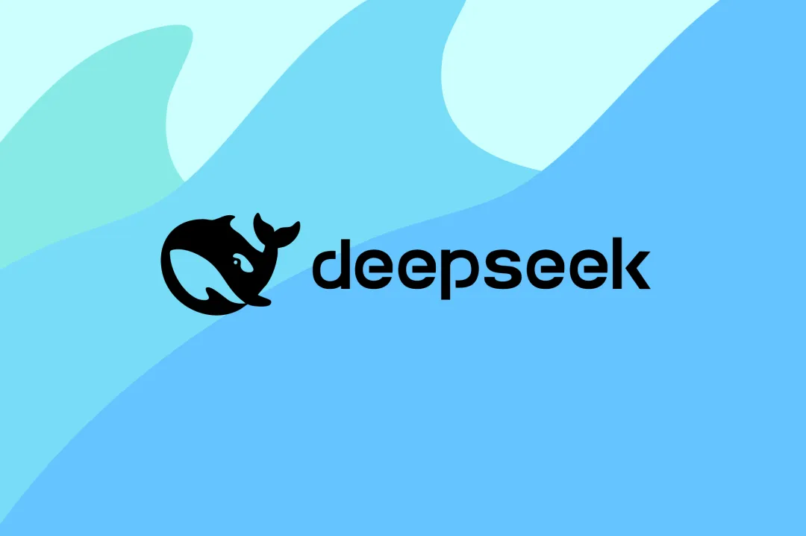

DeepSeek AI: The Emerging Rival to Big AI Giants – A Deep Dive into Its Architecture and Impact

Yash Raj | Posted on January 31, 2025
Table of Contents
Abstract The Rise of DeepSeek AI: Why It Matters Architecture and Technical Deep Dive Impact on AI Research and Industry Future Prospects: Can DeepSeek AI Outperform GPT-4 and Beyond? Conclusion: The Dawn of Open AI CompetitionAbstract
The DeepSeek-R1 Architecture and Training Process demonstrates how cutting-edge AI models can achieve high reasoning capabilities with cost efficiency. This article takes a deep dive into DeepSeek-R1’s Mixture of Experts (MoE) architecture, explaining its expert routing, parallelization strategy, and model specialization. We also break down its reinforcement learning-based training, covering reward mechanisms, data processing, and optimization techniques that enhance logical reasoning and efficiency. Whether you’re an AI researcher, developer, or enthusiast, this article explores an in-depth understanding of how DeepSeek-R1 was built and why it stands out in the AI landscape.
The Rise of DeepSeek AI: Why It Matters
DeepSeek-R1 the latest AI model from Chinese startup DeepSeek represents a groundbreaking advancement in generative AI technology. It has gained global attention for its innovative architecture, cost-effectiveness, and exceptional performance across multiple domains.
In January 2025, DeepSeek AI introduced its latest model, DeepSeek R1, claiming it could rival the capabilities of models developed by OpenAI, such as ChatGPT, while being significantly more cost-efficient to produce. The model’s rapid rise in popularity and its immense potential unsettled investors, causing billions of dollars in losses to Nvidia’s market value. This development also challenged the long-standing belief that American companies would maintain dominance over the rapidly expanding artificial intelligence (AI) industry. Former U.S. President Donald Trump described DeepSeek R1’s emergence as a "wake-up call" for American corporations, emphasizing the need for stronger innovation and investment in AI.
The growing need for AI models that can perform complex reasoning, understand long contexts, and adapt to specific domains has highlighted the shortcomings of traditional dense transformer-based models. These models frequently encounter issues such as:
- High computational expenses due to the activation of all parameters during inference.
- Inefficiencies when managing tasks across multiple domains.
- Limited scalability for extensive deployments.
Architecture and Technical Deep Dive
DeepSeek-R1 is a powerful AI model for text generation, distinguished by its scalability, efficiency, and high performance. Built on a hybrid architecture that combines an advanced transformer-based structure with an innovative Mixture of Experts (MoE) framework, it dynamically allocates computational resources across specialized components. This design enhances its ability to handle complex reasoning and logical inference with exceptional accuracy, speed, and cost-effectiveness.
Mixture of Experts (MoE) ArchitectureDeepSeek-R1 employs a Mixture of Experts (MoE) architecture, where multiple specialized networks handle different parts of an input, with only a selected subset activated for each query.
- Total Parameters: 671B, with only 37B utilized per inference step.
- Expert Networks: Specialized models trained across various knowledge domains.
- Routing Mechanism: A gating network determines which experts to activate, enhancing efficiency.
During inference, DeepSeek-R1 employs a learned routing mechanism to efficiently select relevant experts based on the input context.
- Step 1: Gating Network – The input is processed by a lightweight gating network, which assigns a probability distribution across all experts.
- Step 2: Expert Selection – The model selects a top-ranked subset of experts (typically 2-4 per query).
- Step 3: Parallel Processing – The chosen experts handle the query simultaneously, generating intermediate representations.
- Step 4: Output Aggregation – The model combines expert outputs using a weighted sum mechanism to generate the final response.
To enhance performance and scalability, DeepSeek-R1 utilizes distributed training techniques. It implements Model parallelism by splitting large layers across multiple GPUs, enabling efficient handling of extensive computations. Data parallelism ensures that training data is distributed across GPUs, allowing synchronized updates to model parameters for consistency. Additionally, Pipeline parallelism processes different model components simultaneously, significantly reducing latency and improving overall training efficiency.
Training Process: Reinforcement Learning at ScaleDeepSeek-R1’s training methodology departs from traditional supervised learning and instead focuses on reinforcement learning (RL) for reasoning. This strategy allows the model to improve its logical consistency and adaptability without requiring large-scale human annotations.
Data PreparationThe model's training dataset comprises:
- Filtered Web Data: High-quality, pre-cleaned textual content.
- Domain-Specific Knowledge: Datasets focused on mathematics, science, and reasoning.
- Self-Generated Feedback Data: AI-generated responses that are assessed and refined for continuous improvement.
Initial training follows a two-phase approach:
- Cold Start Phase (2 weeks):Basic language comprehension training and Minimal supervised fine-tuning (~1% of standard approaches).
- Reinforcement Learning Phase (8 weeks): Self-improvement through trial and error, Adaptation of reasoning strategies.
DeepSeek-R1 utilizes reward modeling and reinforcement learning to fine-tune its reasoning abilities.
- Step 1: Generate multiple outputs for a given query.
- Step 2: Evaluate outputs based on logical consistency and correctness.
- Step 3: Assign reward values to different response structures.
- Step 4: Train the model using reinforcement learning to favor high-reward outputs.
def calculate_reward(response):
rewards = {
'logical_consistency': score_logic(response),
'solution_accuracy': verify_solution(response),
'reasoning_clarity': evaluate_clarity(response),
'efficiency': measure_step_efficiency(response)
}
final_reward = (
0.4 * rewards['logical_consistency'] +
0.3 * rewards['solution_accuracy'] +
0.2 * rewards['reasoning_clarity'] +
0.1 * rewards['efficiency']
)
return final_reward
The algorithm calculates a reward score for a given response based on four criteria: logical consistency, solution accuracy, reasoning clarity, and efficiency. Each criterion is evaluated using separate functions, and their scores are weighted (40%, 30%, 20%, and 10% respectively) to compute the final reward. This ensures a balanced assessment, prioritizing logical consistency and accuracy while still considering clarity and efficiency.
Optimization TechniquesTo improve training efficiency, DeepSeek-R1 incorporates:
- Gradient Checkpointing: Reduces memory consumption by recomputing intermediate values.
- Mixed Precision Training: Uses FP16 precision to optimize GPU memory usage.
- Layer-wise Adaptive Learning Rates: Fine-tunes different layers at varying rates to enhance convergence speed.
DeepSeek-R1 achieved state-of-the-art results in various NLP tasks, including text classification, question answering, and natural language inference. It outperformed existing models in terms of accuracy, efficiency, and scalability, demonstrating its potential to revolutionize AI research and applications.
Training Metrices| Training Phase | Duration | Compute Usage | Quality Threshold |
|---|---|---|---|
| Cold Start | 2 weeks | 15% | 0.75 |
| RL Training | 8 weeks | 70% | 0.85 |
| Rejection Sampling | 4 weeks | 15% | 0.90 |
DeepSeek-R1 is evaluated against industry-leading AI models.
| Benchmark | DeepSeek-R1 Score | GPT-4 Score |
|---|---|---|
| MATH-500 | 97.3% | 98.2% |
| ARC Reasoning | 88.5% | 90.1% |
| GSM8K (Math) | 82.7% | 85.5% |
| Factor | DeepSeek-R1 | GPT-4 |
|---|---|---|
| Training Cost | ~$5.58M | ~$100M+ |
| Active Parameters | 37B | 1.8T |
| Hardware Requirement | Consumer GPUs | High-end clusters |
- DeepSeek-R1’s MoE architecture enables efficient reasoning and domain adaptation.
- Reinforcement learning-based training enhances logical consistency and adaptability.
- Cost-effective training and scalability make DeepSeek-R1 a competitive AI model.
- Competitive performance against GPT-4 in multiple benchmarks.
Impact on AI Research and Industry
DeepSeek-R1’s emergence has significant implications for the AI research community and industry at large. Here are some key areas where its impact is already being felt:
- Revolutionizing natural language processing tasks, such as text classification, question answering, and natural language inference.
- Enhancing AI systems' ability to handle ambiguous and complex language.
- Improving AI systems' ability to generate human-like text and improve overall communication.
- Facilitating the development of more effective AI systems.
As we continue to advance in AI, it is crucial to understand the potential impact of DeepSeek-R1 on the broader field of open AI competition. By showcasing its ability to revolutionize various AI tasks and improve AI systems, DeepSeek-R1 will serve as a powerful tool for pushing the boundaries of what is possible in the realm of open AI competition.
Future Prospects: Can DeepSeek AI Outperform GPT-4 and Beyond?
DeepSeek AI has the potential to rival and even surpass GPT-4 by focusing on efficiency, affordability, and multimodal capabilities. Its ability to deliver high performance at lower computational costs makes it an attractive alternative for businesses and researchers.
However, for DeepSeek AI to truly outperform GPT-4 and future models, it must overcome challenges such as scalability, real-world adoption, and ethical AI implementation. Continuous advancements in training techniques, integration with various industries, and staying ahead in the race for AI innovation will determine its long-term success.
If DeepSeek AI can maintain its momentum and push boundaries, it may redefine the AI landscape, challenging the dominance of OpenAI and other tech giants.
Conclusion: The Dawn of Open AI Competition
The dawn of open AI competition has been a fascinating journey, where researchers, engineers, and industry professionals have pushed the boundaries of what is possible in artificial intelligence. DeepSeek AI’s emergence as a cost-effective, high-performance AI model represents a significant milestone in this journey, challenging the dominance of established players and paving the way for new innovations and breakthroughs.
In conclusion, DeepSeek AI represents a significant milestone in the open AI competition, pushing the boundaries of what is possible in the realm of open AI competition. As we continue to advance in AI, it is crucial to understand the potential impact of DeepSeek AI’s emergence on the broader field of open AI competition. By showcasing its ability to revolutionize various AI tasks and improve AI systems, DeepSeek AI will serve as a powerful tool for pushing the boundaries of what is possible in the realm of open AI competition.
Thank you for your time and interest in DeepSeek AI. I hope you found this article informative and engaging. If you have any further questions or need assistance, please don't hesitate to reach out to me. I'm here to help.
Community Resources
DeepSeek-AI offers various resources for developers:
References
[1]
Visit Article
(accessed).
[2]
Visit Article
(accessed).
[3]
Visit Article
(accessed).
[4]
Visit Article
(accessed).